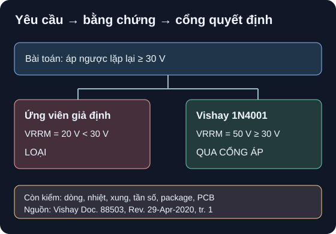

Chọn Linh Kiện Bằng Datasheet
Một bảng có thể kiểm lại quan trọng hơn một tên linh kiện “có vẻ đúng”.
- Chuyển yêu cầu mạch thành bảng min/max kèm đơn vị, nhiệt độ, tần số, dạng sóng và điều kiện lắp.
- Ghi đúng mã đặt hàng, package, revision/ngày, URL, trang/bảng/figure và điều kiện thử cho mỗi claim.
- Phân biệt absolute maximum, min/max được bảo đảm, typical và mô hình minh họa.
- Ra quyết định “loại”, “qua riêng cổng này” hoặc “thiếu dữ liệu”; nêu phép đo và hồ sơ còn cần trước BOM.

Đọc mô tả A08-1
Yêu cầu giả định: diode phải chịu áp ngược lặp lại ít nhất 30 V. Ứng viên giả định 20 V bị loại vì nhỏ hơn 30 V. 1N4001 DO-41 của Vishay có VRRM 50 V theo datasheet nên qua riêng cổng áp. Còn phải so dòng, xung, nhiệt, tần số chuyển mạch, package và cách lắp. Hình không biểu thị một mạch đã lắp.
1. Viết yêu cầu trước tên part
Một yêu cầu tốt ghi rõ điều kiện xấu nhất ở hai đầu linh kiện: áp cực đại và dấu, dòng liên tục/xung, nhiệt môi trường và nhiệt mối nối, tần số, thời gian xung, cách lắp, dung sai hệ. Ví dụ “chặn 30 V áp ngược lặp lại” khác với “chịu xung 30 V không lặp lại”, cũng khác với “TVS giữ rail dưới 30 V”. Vishay Doc. 88503, tr. 1 Maximum Ratings tách VRRM, dòng trung bình và dòng xung; Littelfuse SMBJ Rev. JC.07/04/25 v4, tr. 2 còn tách VR stand-off, VBR tại dòng thử và VC tại dòng xung. Không hoán bốn thông số này.
| Trường | Cần ghi | Lý do |
|---|---|---|
| Yêu cầu | Min/max, đơn vị, cực tính, duty, nhiệt | Định cổng so đúng |
| Ứng viên | Mã đặt hàng đầy đủ, package, hãng | Tránh nhầm biến thể/module |
| Bằng chứng | URL gốc, revision/ngày, trang, bảng/Fig., điều kiện thử | Người khác kiểm lại được |
| Loại số | Absolute max, guaranteed min/max, typical, hoặc giả định | Không lấy đường typical làm bảo đảm |
| Phép tính | So biên và nhiệt với đơn vị | Chứng minh cổng qua/loại |
| Kết luận | Loại / qua riêng cổng / thiếu dữ liệu | BOM chưa tự động được duyệt |
2. Ví dụ giải từng bước: cổng áp ngược 30 V
Bài toán giả định: một nhánh diode có VRRM yêu cầu ≥30 V ở nhiệt và kiểu lắp chưa chốt. Ứng viên X VRRM=20 V là số giả định để luyện cổng loại, không gán cho mã diode thật. Ứng viên thật Vishay 1N4001 DO-41 có VRRM=50 V ở bảng maximum ratings; Vishay 1N5819 DO-41 có VRRM=40 V trong datasheet Schottky riêng. Vishay 1N4001 Doc. 88503, Rev. 29-Apr-2020, tr. 1; Vishay 1N5819 Doc. 88525, Rev. 01-Jul-2020, tr. 1.
- Chọn cùng đại lượng: áp ngược lặp lại phải so với
VRRM, không so vớiVF,VBRcủa Zener/TVS. - Loại ứng viên X:
20 V < 30 V, thiếu 10 V; dù dòng thuận có vẻ đủ cũng không qua cổng áp. - 1N4001:
50 V ≥ 30 V, phần chênh 20 V. Kết luận “qua cổng VRRM trên giấy”, không “đã chọn được diode”. - 1N5819:
40 V ≥ 30 V, chênh 10 V. Schottky có dòng rò và nhiệt khác 1N4001; phải đọc bảng ở nhiệt xấu nhất và dạng tải. - Cổng tiếp: xác định
IF(AV)theo cách lắp/nhiệt,IFSMtheo xung nếu có, tổn haoIF×VFvới điều kiện của đường/giới hạnVF, tần số chuyển mạch và độ tin cậy. Dòng1 Atrong bảng 1N4001 gắn dây dài 9,5 mm,TA=75 °C;1 Acủa 1N5819 gắn điều kiệnTL=90 °C, không phải bảo đảm trên mọi PCB. Vishay Doc. 88503, tr. 1; Doc. 88525, tr. 1.
Nếu mạch có thể đạt 12 V DC cực đại trên tụ, Murata GRM188R61A106MAAL# 10 µF ±20%, 10 VDC, X5R, 0603/1608M bị loại theo cổng áp vì 12>10 V. Murata dynamic model part list, bản 2025-04, hàng GRM188R61C106MAAL ghi 10 µF ±20%, 16 VDC, X5R, 0603/1608M; mã 16 V chỉ qua cổng áp danh định nếu không có quá độ vượt mức. Chưa biết Ceff(12 V), nhiệt, ripple, layout hay ứng dụng, nên chưa chốt BOM. Murata FAQ DC-bias giải thích vì sao phải xem đúng đường C–V của mã.
Với ứng viên 16 V, Murata Reference Sheet GRM188R61C106MAAL-01A, bản 07-Jan-2025, tr. 2 mục Rated Value cũng xác nhận 10 µF ±20%, X5R, DC 16 V cho đúng mã; mã đóng gói ở cuối cần chốt trước khi mua.
3. Ma trận bằng chứng: cùng một nhãn, nhiều cổng khác nhau
| Vai trò / ứng viên | Claim có điều kiện và nguồn | Quyết định hiện tại |
|---|---|---|
| Điện trở 1 kΩ ±5%, 12 V liên tục (ứng viên giả định) | Rmin=950 Ω, Pmax=12²/950≈0,152 W; phải đọc công suất derating/xung/điện áp của mã thực. Vishay, Resistors 101, bảng họ công nghệ chỉ định hướng. | Thiếu mã/derating, chưa duyệt. |
| MLCC Murata GRM188R61A106MAAL# | 10 µF ±20%, 10 VDC, X5R, 0603; product detail, bảng Specifications. | Loại nếu 12 V có thể đặt trên tụ. |
| MLCC Murata GRM188R61C106MAAL# | 10 µF ±20%, 16 VDC, X5R, 0603; part list 2025-04, hàng mã đó. | Qua cổng áp 12 V; còn Ceff, nhiệt, ripple. |
| Diode Vishay 1N4001 DO-41 | VRRM=50 V; Doc. 88503 Rev. 29-Apr-2020, tr. 1 Maximum Ratings. | Qua cổng áp ngược 30 V; còn dòng, tốc độ, nhiệt. |
| Schottky Vishay 1N5819 DO-41 | VRRM=40 V; Doc. 88525 Rev. 01-Jul-2020, tr. 1 Maximum Ratings. | Qua cổng áp ngược 30 V; còn rò, xung, nhiệt. |
| Cuộn cảm Würth 7687714471 | L=470 µH ±20% ở 100 kHz/250 mV; IR=0,6 A theo tăng nhiệt 40 K, ISAT=0,8 A typical theo giảm L <10%. Rev. 001.003, 2019-05-06, tr. 1–2. | Thiếu đỉnh dòng, ripple/nhiệt và layout; ISAT typ không thay giới hạn bảo đảm. |
| Regulator TI LM7805 NDE/TO-220 | Fixed 5 V; RθJA=23,9 °C/W theo điều kiện đo tiêu chuẩn; Rev. L, §6.4 bảng Thermal Information, cột NDE. | Thiếu VIN,min/max, IOUT, PCB, Tj, nhiệt môi trường; không duyệt từ tên “7805”. |
| TI LM2596-5.0 IC, không phải module | Rev. G, Fig. 9-10 và Table 9-2 là mạch ví dụ 12 V max → 5 V/3 A với diode, L, CIN, COUT. | Chỉ là mạch tham chiếu; mọi BOM/PCB/module khác cần kiểm lại. |
Với ferrite bead, Z@100 MHz không phải điện trở DC hay suy hao được bảo đảm ở mọi bias; với TVS, công suất đỉnh xung không phải công suất liên tục. Würth 742792510 Rev. 006.000, tr. 1–2 ghi cả Z(f) và RDC; Littelfuse SMBJ Rev. JC.07/04/25 v4, tr. 1–2 tách định mức xung và các điện áp.
4. Hoạt động tái lập: lập hồ sơ hai ứng viên cho mỗi chức năng
Đặt yêu cầu giả định nhưng có đơn vị cho năm vị trí: R chịu điện áp liên tục 12 V và dung sai; C trên rail 12 V; diode chặn 30 V áp ngược lặp lại; L mang dòng có DC+ripple; regulator từ jack DC tới 5 V. Ghi cả nhiệt độ và dạng sóng nếu biết, “chưa biết” nếu thiếu.
Thêm cột
giá trị,loại số,phép so,kết luận,còn cần. Kết quả kỳ vọng: C 10 V bị loại trên rail 12 V; C 16 V qua riêng cổng áp; 1N4001 và 1N5819 qua riêng cổng áp ngược 30 V. Với R giả định 1 kΩ ±5%,Rmin=950 ΩvàPmax≈0,152 W, nhưng chưa chọn được part khi chưa có derating.Người khác đổi một điều kiện, ví dụ rail từ 12 lên 17 V, rồi chạy lại cổng: cả hai MLCC 10/16 V ở ví dụ đều bị loại theo áp danh định. Lưu bảng, ngày lấy nguồn và điều kiện mới để người đọc kiểm lại; không gọi bảng này là phép đo hay BOM đã duyệt.
| Yêu cầu | Mã/package/revision + URL | Bảng/điều kiện/loại số | Phép so | Quyết định / còn cần |
|---|---|---|---|---|
| R 12 V | _____ | _____ | Rmin/Pmax | _____ |
| C rail 12 V | _____ | _____ | Vrating vs Vmax | _____ |
| Diode 30 V | _____ | _____ | VRRM vs yêu cầu | _____ |
| L DC+ripple | _____ | _____ | IR và Isat riêng | _____ |
| 5 V regulator | _____ | _____ | VIN/IOUT/nhiệt | _____ |
Bảng nguồn hãng là kiểm chứng tài liệu, không chứng minh mạch đã mô phỏng, ERC, lắp hay đo. Chỉ chốt BOM/PCB khi mọi cổng gồm điện áp, dòng, nhiệt, xung, package, layout và điều kiện nguồn được duyệt; mạch dùng pin, adapter phía lưới hoặc chuyển mạch cần quy trình chuyên biệt.
Rail DC có thể đạt đúng 12 V trong điều kiện danh định, chưa biết quá độ. Hai ứng viên cùng 10 µF X5R: Murata GRM188R61A106MAAL# ghi 10 VDC và GRM188R61C106MAAL# ghi 16 VDC. Dựa trên nguồn ở mục 2–3, kết luận cho từng part và liệt kê bốn kiểm tra còn thiếu. Nếu rail có quá độ 17 V, kết luận thay đổi ra sao?
- Mô hình, 1 điểm: so điện áp lớn nhất có thể đặt lên tụ với điện áp danh định đúng mã; ghi rail 12 V và quá độ 17 V là hai tình huống khác nhau.
- Điều kiện/nguồn, 1 điểm: dẫn Murata part 10 VDC và Murata list 16 VDC, ghi 0603/X5R/±20% và điều kiện áp DC.
- Kết luận số, 1 điểm: ở 12 V, 10 V bị loại (
12>10), 16 V qua riêng cổng áp (12<16); ở đỉnh 17 V, cả hai bị loại (17>16). - Giới hạn, 1 điểm: part 16 V ở 12 V vẫn cần Ceff theo DC bias, dung sai/nhiệt, dòng ripple/tự nung nóng và biên quá độ/layout. Đường typical không biến thành giới hạn bảo đảm; chưa duyệt BOM.